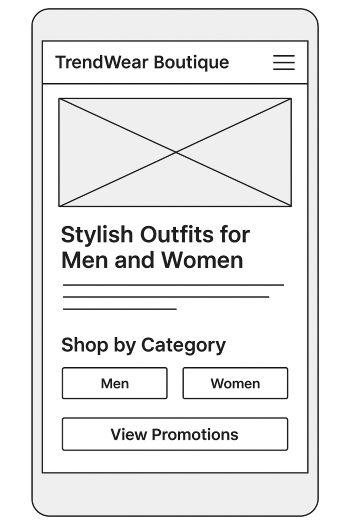
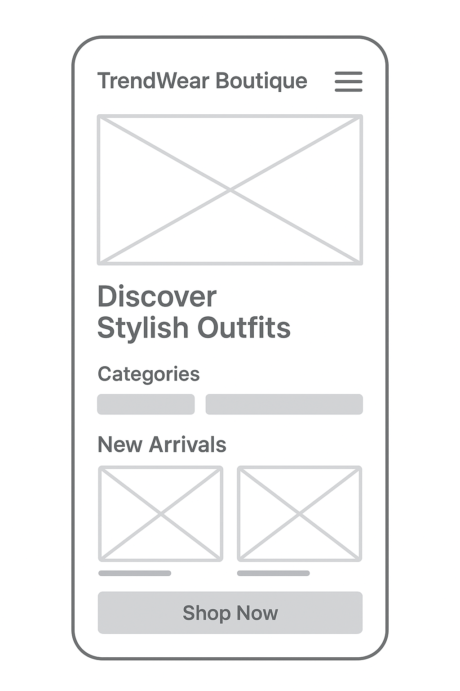

TrendWear Boutique
This name represents a stylish, modern clothing store that focuses on trendy outfits for everyday wear. It reflects fashion, class, and modern designs.
The purpose of this site is to showcase stylish outfits for men and women, allowing customers to browse clothing categories, view product details, and learn about promotions and store updates.
Primary Color: Navy Blue (#1e3a8a)
Used for headings, accents, and navigation highlights.
Secondary Color: Warm Gold (#fbbf24)
Used for buttons, call-to-action areas, and important highlights.
Main Font: Poppins (sans-serif)
Used for headings and body text throughout the site for a modern clean fashion look.


These wireframes represent the layout for both mobile and desktop views of the TrendWear Boutique home page.